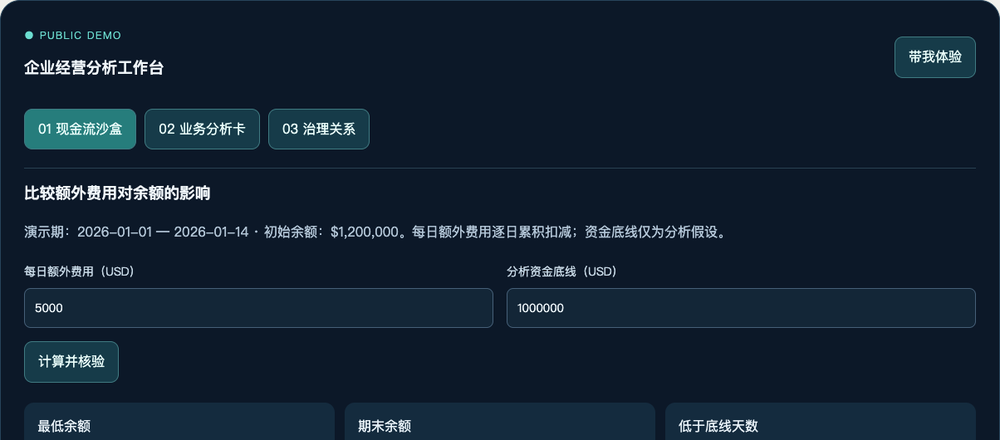

业务挑战
多个 POC、分析工具和证据入口分散，业务人员难以理解先做什么、结果从哪里来，以及何时交还人工。
FLAGSHIP / FDE · AI PRODUCT · GOVERNANCE
把业务问题、确定性工具、人机复核和证据关系连接成可以实际体验的产品流程。
体验任务：增加每日额外费用，观察何时低于资金底线，再查看核验与人工复核边界。

多个 POC、分析工具和证据入口分散，业务人员难以理解先做什么、结果从哪里来，以及何时交还人工。
统一任务入口，拆分分析步骤，以确定性计算支撑数字，保留来源、限制和复核责任。桌面项目使用本地原生桥接与 SVG 图谱。
场景与产品规划、FDE 工作流、工具契约、人机协同、证据治理，以及可退出的功能引导。
TRY THE WORKFLOW
以下为基于桌面项目流程重新适配的网页演示。独立构造 14 天现金流数据，币种 USD；不连接账户、不调用模型。数字核验仅检查本次算术一致性，不构成业务审批。
演示期：2026-01-01 — 2026-01-14 · 初始余额：$1,200,000。每日额外费用逐日累积扣减；资金底线仅为分析假设。
| 日期 | 基准余额 | 方案余额 | 低于底线 |
|---|
填写分析卡并导出，供人工交接。输入仅在当前页面保留，刷新后清除。
业务任务、数据、工具、规则与证据的公开适配演示。不是桌面实时图谱，不连接模型或企业系统。
当前仅为受控网页演示，不宣称灰度或生产就绪。权限验证、真实数据质量、审批认证与不可篡改审计均不在本演示范围。
关系探索展示20个独立定义实体；运行与证据展示最近一次有效计算。模拟版本变化或输入缺失，可观察证据状态如何降级。
动态视图借鉴桌面门户的 SVG 关系探索。连线流动仅帮助阅读结构方向，不代表数据传输、Agent运行或实时监控。
快速体验：切换“完整分组” → 选择一个节点 → 在下方查看其版本与上下游。手机默认显示可读列表，可手动展开动态图。
展开查看输入、假设、计算和检查。不是历史运行库，不保存服务器记录。
参数变化立即撤销旧结果。JSON导出仍保留未审批标识；演示状态变化不伪造或修改计算证据。
只切换演示条件，不加载新数据、不执行审批。模拟缺失与版本变化均不代表算术检查失败。
人工需要核实：数据是否真实完整、假设是否合理、风险是否可接受、谁具有审批权限。
不提供“批准”按钮：本页面没有身份认证与授权能力，填写复核说明不能替代真实审批。
这里的“本体”是公开演示的实体与关系定义，不是企业正式主数据模型，也不是已部署的知识库。
| 字段 | 约束 | 用途 |
|---|---|---|
| id | 唯一稳定字符串 | 关系引用，不能用客户名称作为ID |
| name / type | 公开名称 / 六种演示类型 | 业务解释与分类 |
| version | 定义版本，不是部署证明 | 追踪业务对象含义 |
| from / to / label | 引用已有实体ID / 明确方向 | 表达上下游业务关系 |
| business_approval | 始终 false | 不将网页操作伪装成审批 |
以下是固定演示版本契约，不是历史档案库。切换目标版本只改变治理模拟条件，不修改现金流数据或计算结果。
| 对象 | 当前版本 | 变化影响 |
|---|---|---|
| 合成现金流 | synthetic-v1 | 目标版本变化后旧证据需重算 |
| 确定性计算 | calc-v1 | 工具契约变化时需重做算术回归 |
| 算术规则 | check-v1 | 规则变化时需重新验证检查范围 |
| 结构定义 | schema-demo-v1 | 字段或关系变化时需检查引用一致性 |
生产流程应：确认变更范围 → 获取获准数据 → 重新计算与核验 → 人工复核 → 生成对应新版本证据。本网页不执行这一生产流程。
即使重新点击现金流计算，仍使用 synthetic-v1。若目标为模拟v2，证据保持待重新验证；恢复v1匹配也不等于业务批准。
网页可体验费用敏感性、结果核验、分析卡和治理说明。所有运行在浏览器中，支持断网浏览与导出。
桌面 App 启动、Finder 定位、Obsidian 连接、原生文件保存与历史证据验证不包含在本演示中。
关联项目 v3.10 开发记录报告 91 项 Python 测试、189 项原生与静态检查通过；本网页单独验证。AI 对话尚未接入。
页面只使用独立合成示例，不包含客户数据、内部路径、连接配置或交付文件。案例展示产品设计与工程方法，不宣称客户收益或生产部署结果。